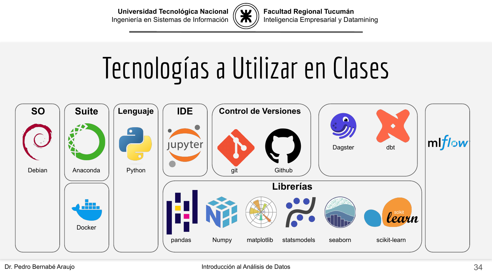
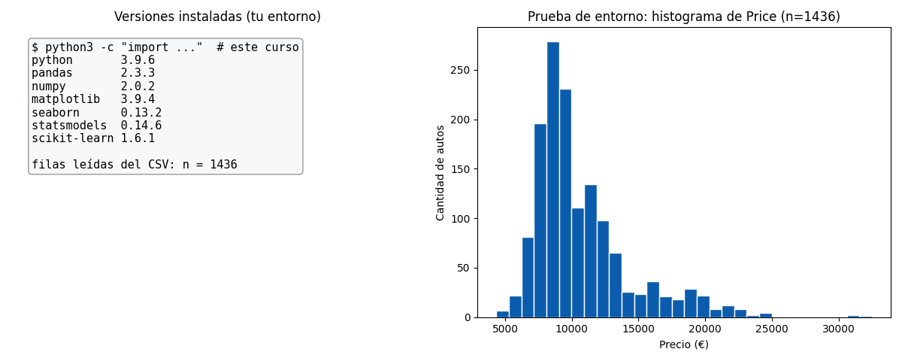

Bloque A · Presentación e introducción · Lección 0049 · mar 18 ago
El stack de herramientas del curso
Win de hoy: dejar tu entorno corriendo y verificado: importar las 6 librerías
del curso, imprimir sus versiones y leer ToyotaCorolla.csv con un snippet que lo comprueba.
1 · El stack de cátedra, pieza por pieza
Esta es la foto oficial de las herramientas que usa la materia, tal como la presentó cátedra en clase:

Cada casillero del slide, en una línea:
| Pieza del slide | Qué es |
|---|---|
| SO Debian | El sistema operativo de las máquinas de cátedra. Vos podés usar el tuyo (Mac, Windows, Linux): Python corre igual en todos. |
| Suite Anaconda | El paquete que instala Python más las librerías científicas de una sola vez, sin pelear con dependencias. |
| Lenguaje Python | El único lenguaje del curso: todo snippet, figura y modelo de estas lecciones está escrito en Python. |
| IDE Jupyter | El cuaderno interactivo donde se mezclan código, gráficos y texto. Acá corrés los snippets celda por celda. |
| Control de versiones (git + GitHub) | git registra cada cambio de tus archivos; GitHub los guarda en la nube y permite colaborar. Este curso vive en un repositorio así. |
| Contenedor Docker | Empaqueta programa y dependencias para que corra idéntico en cualquier máquina. Lo nombramos para que lo reconozcas; no lo usamos. |
| Dagster / dbt | Herramientas de orquestación y transformación de datos en producción. Alcance: reconocer el nombre, nada más. |
| Tracking mlflow | Registra experimentos (qué parámetros, qué métrica dio cada corrida). Acá alcanza con saber que existe. |
| Librerías (las 6 del curso) | pandas (tablas), numpy (números), matplotlib y seaborn (gráficos), statsmodels (modelos estadísticos), scikit-learn (machine learning). |
2 · Verificá tu entorno (el win, paso a paso)
La prueba mínima de que tu stack funciona tiene dos partes: que las 6 librerías importen y
que el CSV se lea.
Corré este snippet desde la carpeta lessons/ (o en un cuaderno Jupyter parado ahí):
import pandas as pd
import numpy as np
import matplotlib
import seaborn as sns
import statsmodels
import sklearn
print("pandas", pd.__version__)
print("numpy", np.__version__)
print("matplotlib", matplotlib.__version__)
print("seaborn", sns.__version__)
print("statsmodels", statsmodels.__version__)
print("scikit-learn", sklearn.__version__)
print(pd.read_csv("../ToyotaCorolla.csv").shape) # (1436, 37)Salida esperada (tus versiones pueden ser más nuevas; lo importante es que importe sin errores y el CSV dé (1436, 37)):
pandas 2.3.3
numpy 2.0.2
matplotlib 3.9.4
seaborn 0.13.2
statsmodels 0.14.6
scikit-learn 1.6.1
(1436, 37)3 · Cómo se trabaja en este curso (3 hábitos)
- Rutas relativas desde
lessons/. Los snippets leen el dataset como../ToyotaCorolla.csvporque el CSV vive en la raíz del repo, un nivel arriba de cada lección (lo viste en la lección 0001, §2). - Las figuras se regeneran, no se dibujan a mano. Cada PNG de
assets/img/toyota/sale depython3 scripts/make_figures.py --only <slug>(reemplazá<slug>por el de la lección, por ejemplotipos-de-datos-toyota). - El sitio se mira con un servidor local. Parado en la raíz del repo:
python3 -m http.servery abrirhttp://localhost:8000en el navegador.
Ejemplo del hábito 2: los boxplots de la lección 0001, §4 se regeneran con
python3 scripts/make_figures.py --only tipos-de-datos-toyota y dan el mismo PNG versionado.
4 · Figura: tu entorno en una imagen
La figura de esta lección es tu “certificado de entorno”: a la izquierda las versiones instaladas
(leídas en tiempo de ejecución), a la derecha el histograma de Price como prueba de que tu stack lee el CSV:

Price (n = 1436): si tu corrida lo reproduce, tu stack lee bien el CSV.Tu turno: corré python3 scripts/make_figures.py --only tecnologias-stack-clase
y compará tu PNG con el de arriba. El histograma debe ser idéntico; el panel de versiones refleja tus números, no los míos.
5 · Quiz (auto-chequeo inmediato)
6 · Fuente primaria y cierre
Para profundizar (1 fuente): McKinney, Python for Data Analysis — capítulo 1
(el entorno y las herramientas de Python para datos)
(wesmckinney.com/book, también en RESOURCES.md del curso).
Como segunda referencia, la documentación oficial de pandas para
read_csv. El stack completo viene del slide de cátedra UTN-FRT (clase de introducción, p. 34).
Orden Bloque A: seguí en la lección 0002 (mié 19: niveles y TDSP).
¿Algo no quedó claro? Preguntame al agente: qué pieza del stack te falla al instalar, qué versión te dio distinta, o qué hábito de trabajo te cuesta. Esa pregunta vale más que releer.